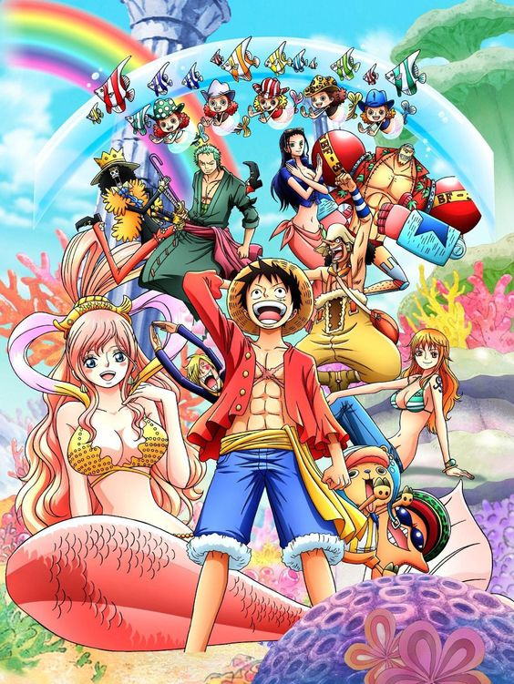

Episódios: 517 a 574
Formada apenas por dois arcos, esta saga marcou o início da segunda parte do anime. A trama tem início dois anos após os eventos da Guerra de Marineford, com o primeiro arco - Retorno a Sabaody - mostrando a reunião dos Piratas Chapéu de Palha. Retorno a Sabaody trouxe diversas mudanças nos personagens e na realidade ao redor deles, após o salto temporal. A recompensa por Luffy agora é de 400.000.000, devido aos seus crimes contra o fuzileiros navais. Os fuzileiros, por sua vez, contam com um novo almirante, que mudou o Quartel General para o G-1, com o objetivo de desafiar os Quatro Imperadores. Os Piratas do Chapéu de Palha se reúnem na Ilha Sabaody, cada um deles mudados após 2 anos de treinamento, com novos poderes e maior domínio de suas habilidades. Sob a perseguição dos Piratas Caribou, que planejam matar seus adversários, a tripulação de Luffy segue para a Ilha do Homem-Peixe. As surpresas tanto na viagem até seu destino quanto ao chegar à ilha são muitas, e eles precisarão enfrentar os habitantes do local ao mesmo tempo em que tentam salvar a ilha de um perigo ainda maior.
